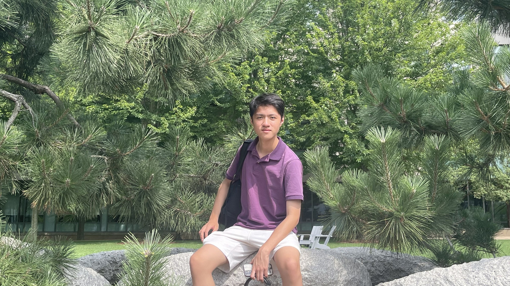
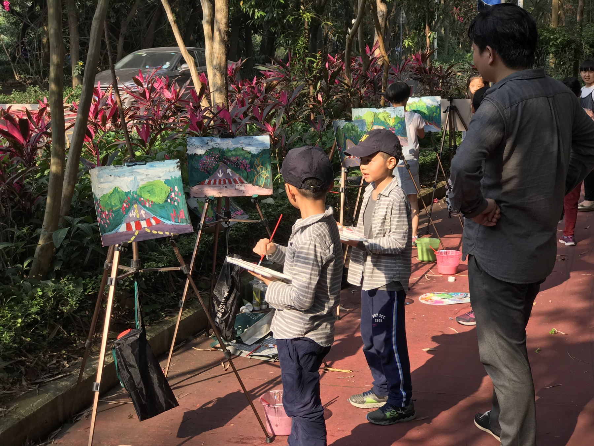
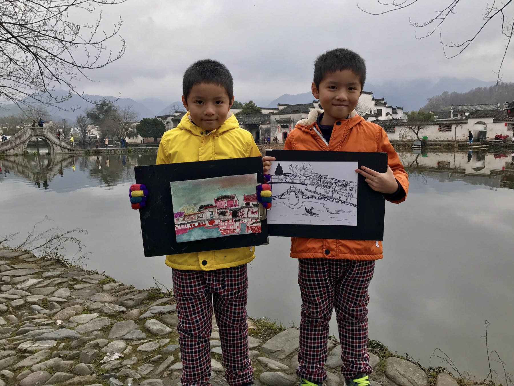
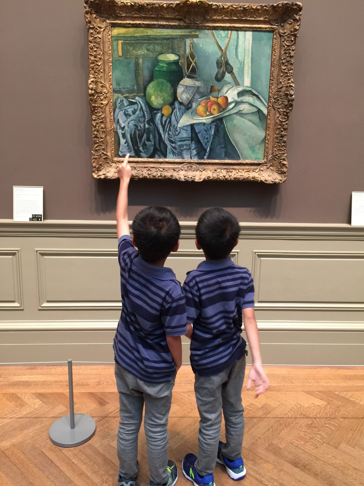
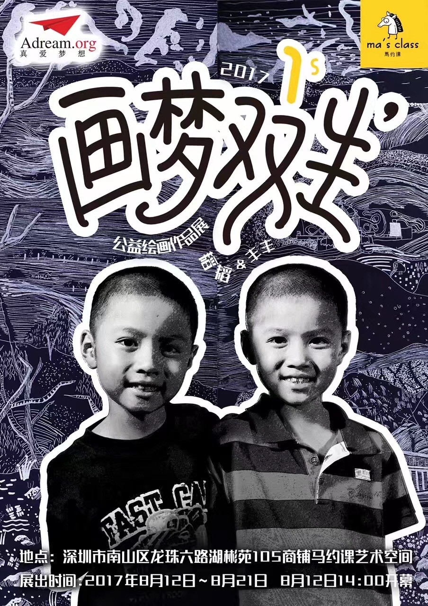

Looking first. Then making.
Hong Kong — arts, history, culture.
CHARLES
Artist & designer in Hong Kong
HK — 00:00:00
Education & academics
Hong Kong
International School
High School · 2021.09 — 2027.06
3.798
Cumulative GPA
4.0
Senior year
1550
SAT
9
AP courses
Courses
- AP Art History
- AP Studio Art
- AP European History
- AP U.S. History
- AP Language and Composition
- AP Chemistry
- AP Biology
- AP Physics 1
- AP Calculus AB
Programs
- 2026.06 — 07 Carnegie Mellon Visual Art Summer Program Animation, sculpture, concept, and drawing — through technique and the context of artworks.
- 2026.01 — 03 Cornell Winter School, Greek & Roman Art ARTH 2200: Introduction to the Classical World in 24 Objects.
- 2025.06 — 07 Sotheby’s Art History Summer Program Curation and appreciation through research projects and museum visits.
- 2025.06 Harvard CAMLab CAMLab workflow, 3D scanning, and building a sensory experience with research and 3D tools.
C
EXPERIENCES
Exploring,
Creating,
Contributing.
My art journey
Journey
Eleven years of
looking and making.
I’ve been an artist for 11 years. From painting outdoors with my brother to looking closely at works in museums, art has always been part of how I explore the world.
My brother and I sold 90 of our paintings and donated the proceeds to the Adream Foundation. Making art became a way to give back, as well as a way to express ourselves.
Along the way, I developed an art portfolio, managed an Instagram account with 90 followers, and created an online art exhibit for 100 people. I also completed five commissions totaling $30,000.




C
ART
Art Portfolio
Acrylic on wood panel and paper, digital collage, and interactive web art — a portfolio about memory, attention, and what is real.
Kentucky International Art Competition, Gold, 2024. Denmark International Youth Art Competition, Silver. The Monet International Art Prix, Silver.
Aside from the work